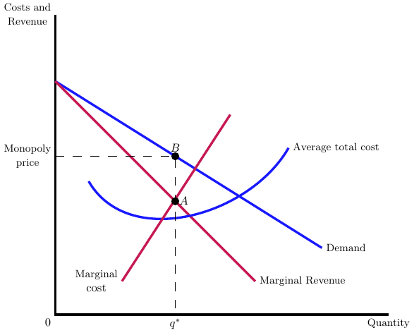
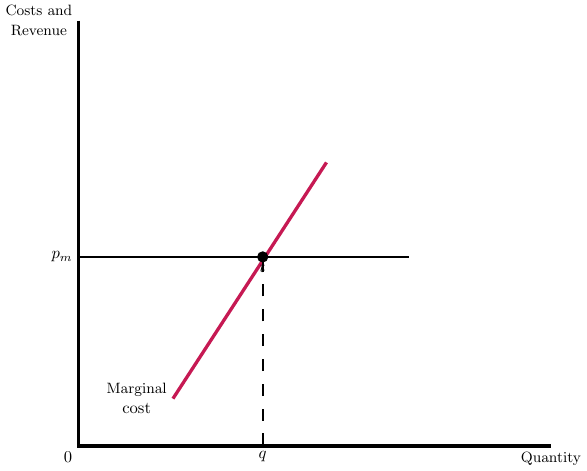

14 Single-price Market
Within the realm of healthcare economics, providers commonly encounter two distinct pricing scenarios. Firstly, there is a predetermined price set by government programs such as Medicare and Medicaid, denoted as \(p_m\). Secondly, providers engage in negotiations with private insurers to establish a price, referred to as \(p_n\). The prices set public insurers (\(p_m\)) may influence the negotiated price with private insurers (\(p_n\)). For example, providers may employ the Medicare price as a reference point during negotiations with insurers.
Before we think about the interplay of both prices, however, let’s focus just on a single-price provider. We’ll look first at the case of a provider setting price with some market power, and then we’ll turn to the case of a fixed price.
14.1 Price-setting with market power
14.1.1 For NFP objective functions
Let’s assume for now that not-for-profit hospitals are truly not-for-profit and have the following objective function: \[max_{p_{i,j}} U\left( \pi_{j} = \pi_{i,j} + \pi_{g,j},D_{i,j}, D_{g,j} \right),\]
where \(\pi_{j}\) denotes total profits for hospital \(j\), \(\pi_{i,j}\) denotes profits from payer \(i\) and hospital \(j\), \(\pi_{g,j}\) denotes profits from a government payer and hospital \(j\), and \(D_{i,j}\) denotes hospital demand from insurer \(i\). We assume that \(p_{g}\) is exogenous and determined by a public payer, so the hospital need only set its price for private insurance customers, \(p_{i,j}\).
The hospital chooses \(p_{i}\) such that
\[\frac{\mathrm{d}U}{\mathrm{d}p_{i}} = U_{1} \pi_{1}^{i} + U_{2} \frac{\mathrm{d}D_{i}}{\mathrm{d}p_{i}}=0\]
where \(U_{1}\) denotes the derivative of \(U(\cdot)\) with respect to its first argument and similarly for \(U_{2}\). In general, we can’t solve this directly without knowing the hospital’s utility function. But we can say something about the potential relationship between \(p_{i}\) and \(p_{g}\), which we’ll turn to in the next chapter.
14.1.2 For FP objective functions
If we instead assumse that the hospital maximizes \(\pi_{i,j}\) (e.g., the profit from insurer \(i\)), then this takes the form of a standard price-setting problem for a monopolisitcally competitive firm, illustrated in Figure 14.1.
As a simple example, consider a firm with (inverse) demand curve, \(d=16-q\), and cost curve, \(c(q)=5+q^{2}\). We want to find the firm’s price, the quantity at that price, and their markup over marginal costs (just for fun).
Let’s first write out the profit function, \(\pi = (16-q)q - 5 - q^{2}\). Differentiating with respect to quantity yields \(-q + 16 - q - 2q= 16-4q=0\), or \(q=4\). At this quantity, the price is \(p=12\), which is a markup of 4 over the marginal cost (or 50% markup). This should all feel very familiar from your intro and intermediate microeconomics courses.
14.2 Pure Price Taker
Now let’s turn to the case of a pure price taker (e.g., a hospital must accept the price set by a public payer). In this case, the hospital will sell at the public price to the point where marginal revenue equals marginal cost, as depicted in Figure 14.2.

The key intuition here is that the public price is the firm’s marginal revenue. The firm can sell as much quantity as it wants at that fixed marginal revenue. While this is a simple example, this becomes more interesting when we consider a firm as both a pure price taker in one market (e.g., Medicare patients) and a price setter in another market (e.g., for commercial insurance patients). We’ll turn to that in the next chapter.